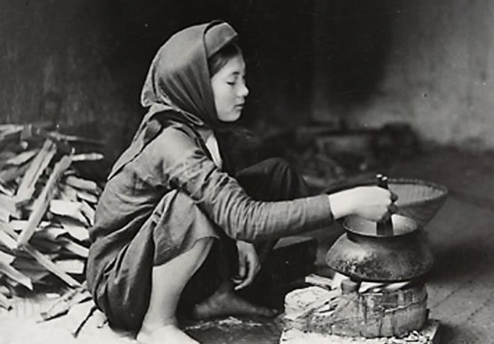
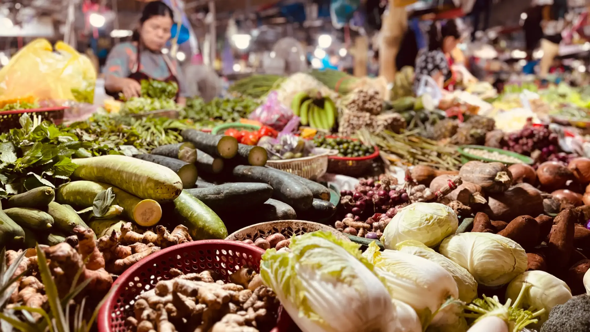
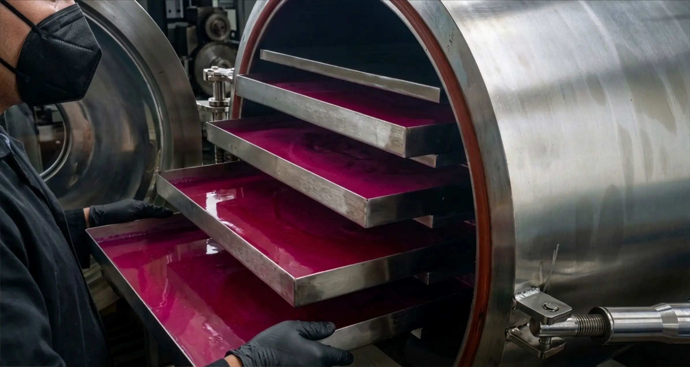

Thế giới Naula
Nơi cỏ cây,
hoà vào lối sống.
Câu chuyện đằng sau TKG

TKG khởi nguồn từ một câu hỏi đơn giản: làm sao để thảo mộc Việt bước ra thế giới mà không đánh mất đi phương thức nấu ủ nguyên bản?
Naula không phải là một khái niệm marketing. Đó là một kỷ luật nấu ủ bén rễ từ tập quán nấu thảo mộc của người Việt — được xây dựng xoay quanh những chiếc lá, những chiếc rễ nguyên bản, được gọi tên từ chính nguồn cội.
Thảo mộc nguyên vẹn. Nấu ủ minh bạch. Những nguyên liệu luôn vẹn nguyên hình dáng từ lúc chế biến cho đến khi rót vào ly.
"Không chạy theo xu hướng.
Không xuất khẩu chỉ vì thành tích."

Từ lâu, thảo mộc Việt đã tồn tại như một phần không thể thiếu trong đời sống thường nhật — hiện diện trong mỗi bữa cơm, trong những thức nước nấu theo mùa, và trong cả nếp sinh hoạt hàng ngày.
Từ củ gừng, nhánh sả cho đến chiếc lá tía tô, quả quất, những nguyên liệu này chưa từng được xem là xu hướng hay đặc sản thời thượng. Chúng đơn thuần là một phần trong cách người ta nấu ủ và sẻ chia thức quà từ cây cỏ.
Naula được khởi nguồn từ chính nền văn hóa thảo mộc sống động ấy. Không chỉ bắt đầu từ bản thân nguyên liệu, mà còn từ chính những tập quán nấu ủ đã thổi hồn và tạo nên ý nghĩa cho chúng.

Mỗi thảo mộc, một đặc tính riêng với nhiệt, nước và thời gian.
Loài cần chiết xuất chậm. Loài đòi hỏi sự tiết chế.
Mỗi thức thảo mộc đều có một lối phản hồi riêng với nhiệt độ, nguồn nước và thời gian.
Có loại sẽ thăng hoa khi được ninh chậm rãi. Có loại lại cần được đưa vào sau, khi nhiệt độ đã hạ bớt. Mỗi nguyên liệu đều được nấu ủ dựa theo chính đặc tính riêng của nó, chứ không bị ép buộc vào một quy trình rập khuôn.
Phương pháp Naula được xây dựng xoay quanh chính kỷ luật tinh chỉnh này — cân bằng giữa nhiệt độ, thời gian và độ đậm nhạt cho từng loại thành phần thảo mộc.
Bén rễ từ tập quán thảo mộc của người Việt, phương pháp này xem nghệ thuật nấu ủ là một phần cốt lõi tạo nên giá trị của cây cỏ. Không phải thứ gì cũng được nấu theo một cách. Không phải nguyên liệu nào cũng được cho vào cùng một thời điểm.
Mục tiêu không phải là kiểm soát hoàn toàn tự nhiên, mà là đồng hành cùng nó — để vẹn nguyên hình dáng và đặc tính nhận biết của mỗi thức thảo mộc, từ lúc nấu ủ cho đến khi rót vào ly.

Naula khởi đầu bằng việc nấu ủ thảo mộc tươi thành dạng lỏng.
Chỉ sau khi quá trình nấu ủ hoàn tất, việc bảo toàn mới bắt đầu. Thức nước cốt thành phẩm được cấp đông ở nhiệt độ sâu và lưu giữ thông qua công nghệ sấy thăng hoa, giúp loại bỏ độ ẩm nhưng vẫn vẹn giữ trọn vẹn đặc tính của mẻ nấu nguyên bản.
Phương pháp này giúp bảo tồn nguyên vẹn hương thơm, hương vị, màu sắc và đặc tính của thảo mộc, đồng thời tạo ra một định dạng sản phẩm phù hợp hoàn hảo với nhịp sống đương đại.

Nấu ủ Naula · Sản phẩm Việt Nam
Thảo mộc nguyên vẹn không phải lúc nào trông cũng rập khuôn như một.
Vệt lắng tự nhiên, những chuyển biến nhẹ về màu sắc, hay sự khác biệt thoảng qua trong hương thơm chính là dấu chỉ cho thấy nguyên liệu vẫn vẹn giữ được đặc tính nguyên bản của chúng suốt quá trình nấu ủ.
Thay vì loại bỏ đi những đặc tính tự nhiên ấy, Phương pháp Naula trân trọng và để chúng hiện hữu một cách minh bạch.
Chúng tôi tin rằng sự toàn vẹn của cỏ cây được bảo toàn không phải bằng cách kiểm soát hoàn toàn tự nhiên, mà bằng cách bớt can thiệp vào nó.
Chúng tôi viết chậm rãi. Mỗi chương đều được vẹn toàn trước khi ra mắt.
"Chúng tôi viết chậm rãi. Mỗi chương đều
được hoàn thiện trước khi ra mắt."
Không gửi định kỳ. Không quảng cáo. Một email cho mỗi chương, khi nó đã sẵn sàng.